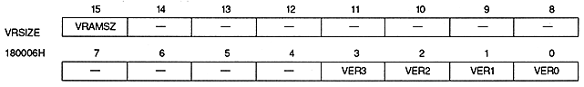

VBLANK | Vertical scanning state |
0 | Scanning is in the vertical display period |
1 | Scan during vertical blanking (VBLANK) |
HBLANK | Horizontal scan state |
0 | Scan is in horizontal display |
1 | Scan during horizontal retrace (HBLANK) |
ODD | Table display |
0 | During even field period |
1 | Scan during odd field period |
PAL | Table display |
0 | NTSC method |
1 | PAL method |
